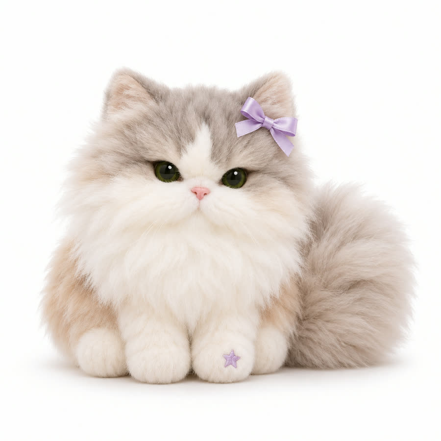

Focus with her and she catches fish: 5 minutes = 1 fish, up to 30 a day. Fish feed her and pay for new study questions (1 each; reviews are free).
Sign in under 📖 Study to see your growth curve.
Your topics appear here after your first questions with Chizu.
·
Tell her what you're studying. She explains, quizzes you, and brings back what you missed the next day.
No sign-up needed to start. Save with Google anytime so your cards and notes follow you. You get 20 fish: 1 fish per new question, reviews are free.
Pick a time. She'll call you to your desk every day, as long as this page is open.
Owners get 50 fish (about 50 new questions), pajamas to keep, and a numbered card with her name. One-time purchase, full refund before launch.
Take her home